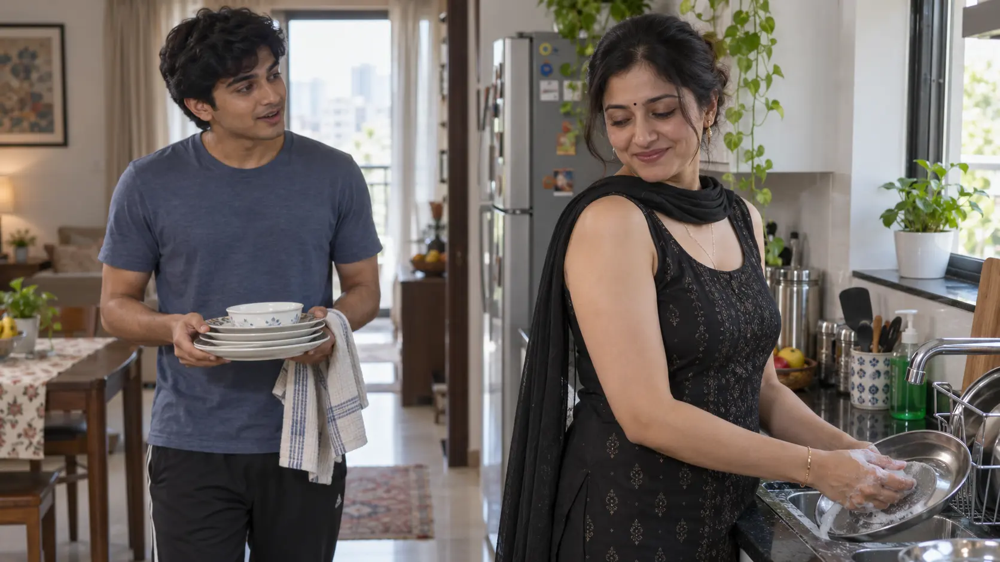
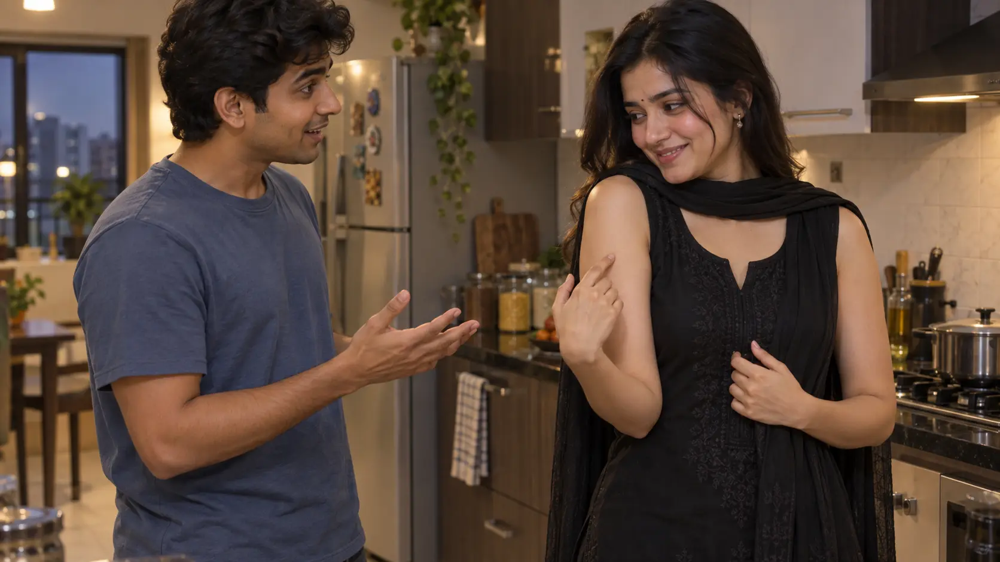
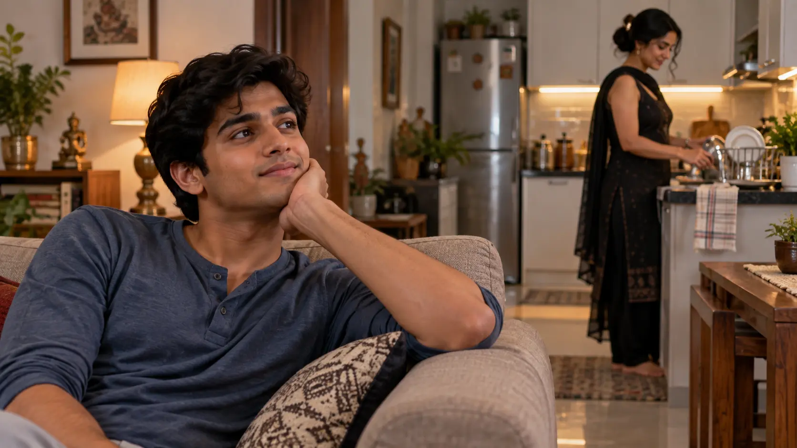

L195–197
The dress is noticedChotu's question surprises Dhika while they finish the dishes.

GENERATED_PENDING_REVIEW · respectful notice · L195–197
Sequence: dress noticed → first compliment → trust exchange → first crush · L195–207.
Chotu's question surprises Dhika while they finish the dishes.

The first compliment makes Dhika blush; she explains the trust she places in him.

Waiting on the sofa, Chotu quietly recognizes his first crush.

Chotu ka “little crush” explicitly confirm hota hai.
Source sirf blush aur compliment pasand karna establish karta hai.
Dhika uske “just hands” response ko innocence aur safety ka proof samajhti hai.
Woh establish karta hai ki compliments enjoy karna pehle se character trait hai.
Dhika: shy, pleased, and more verbally explicit about trust.
Chotu: innocent confusion gives way to private romantic admiration.
| Layer | Through Part 11 |
|---|---|
| Spoken | Didi, innocent Chotu Babu, trust. |
| Dhika internal | Pleased by compliment; no stated crush. |
| Chotu internal | First little crush; sees her as a beautiful woman. |
The “I can see it now” line refers to her hands/arms in their dialogue. Do not import the Part 12 neckline event backward.
Her statement marks a boundary category in her mind: Chotu is safe. It does not create consent beyond what she knowingly shows.
Dhika knows the compliment, not the crush. Chotu knows his new feeling, not Dhika's prior bedtime thoughts.
Compliment → blush → explicit trust → private crush is the Part's escalation chain.
The scene stays light and giggling on the surface; the narrator alone confirms Chotu's internal shift.
| Hook | Status |
|---|---|
| Dress noticed? | YES. |
| Attraction? | Chotu: YES; Dhika: not stated. |
| What follows the compliment? | OPEN into Part 12. |
Positioning: Chotu seated on hall sofa; Dhika moving from dining area toward bedroom/bathroom.
Wardrobe: black sleeveless low-cut salwar plus dupatta at L207.
Emotional state: Dhika buoyed by compliment; Chotu has private first crush.
Next boundary: L208 spill cleanup.